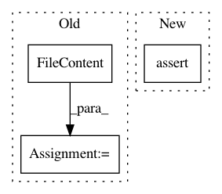

9228ad83a3ecde2fb5a714d1eb43c7c1ee2e200b,src/python/pants/backend/python/lint/pylint/rules_integration_test.py,PylintIntegrationTest,test_includes_direct_dependencies,#PylintIntegrationTest#,156
Before Change
def test_includes_direct_dependencies(self) -> None:
self.create_python_library(name="transitive_dependency", sources=[])
direct_dependency = FileContent(
path=f"{self.source_root}/direct_dependency.py",
content=dedent(
\
// No docstring because Pylint doesn"t lint dependencies
from transitive_dep import doesnt_matter_if_variable_exists
THIS_VARIABLE_EXISTS = ""
).encode(),
)
self.write_file(direct_dependency)
self.create_python_library(
name="direct_dependency",
sources=["direct_dependency.py"],
After Change
result = self.run_pylint([target])
assert result.exit_code == 0
assert "Your code has been rated at 10.00/10" in result.stdout.strip()
def test_skip(self) -> None:
target = self.make_target_with_origin([self.bad_source])
result = self.run_pylint([target], skip=True)
In pattern: SUPERPATTERN
Frequency: 3
Non-data size: 3
Instances
Project Name: pantsbuild/pants
Commit Name: 9228ad83a3ecde2fb5a714d1eb43c7c1ee2e200b
Time: 2020-04-15
Author: 14852634+Eric-Arellano@users.noreply.github.com
File Name: src/python/pants/backend/python/lint/pylint/rules_integration_test.py
Class Name: PylintIntegrationTest
Method Name: test_includes_direct_dependencies
Project Name: pantsbuild/pants
Commit Name: 3222b9728d9f07cbce611ba6c57ef0d640d033a6
Time: 2021-04-05
Author: 14852634+Eric-Arellano@users.noreply.github.com
File Name: src/python/pants/backend/python/lint/bandit/rules_integration_test.py
Class Name:
Method Name: test_type_stubs
Project Name: pantsbuild/pants
Commit Name: 3222b9728d9f07cbce611ba6c57ef0d640d033a6
Time: 2021-04-05
Author: 14852634+Eric-Arellano@users.noreply.github.com
File Name: src/python/pants/backend/python/lint/flake8/rules_integration_test.py
Class Name:
Method Name: test_type_stubs